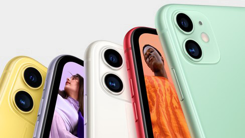
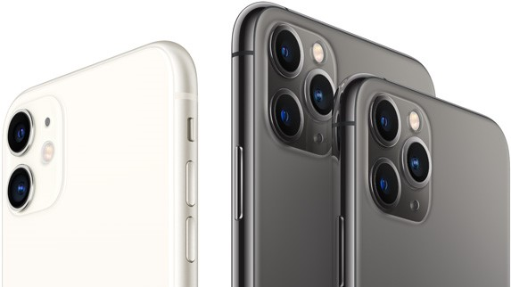
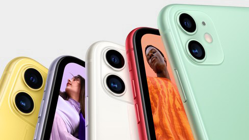
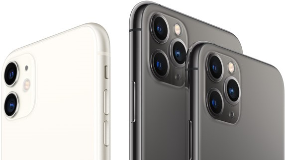

1971年，16岁的史蒂夫·乔布斯（Steve Jobs）和21岁的史蒂芬·沃兹涅克（Stephen Wozniak）经朋友介绍而结识。
1976年，乔布斯成功说服沃兹装配机器之余更拿去推销，他们另一位朋友，罗·韦恩（Ron
Wayne）也加入。
1976年4月1日组成了苹果电脑公司（Apple Computer, Inc.）。
| 品类 | 产品 |
|---|---|
| 笔记本： | PowerBook、iBook、MacBook、MacBook Pro、MacBook Air |
| 手机： | iPhone |
| MAC电脑： | Mac Pro、iMac |
| 小型桌面电脑： | Mac mini |
| 平板电脑： | iPad、iPad mini、iPad Pro |
| 音乐播放器： | iPod classic、iPod、iPod nano、iPod shuffle、iPod mini、iPod Hi-Fi、iPod touch |
| 显示器： | Apple Cinema Display（27英寸）、AppleThunderbolt Display（27英寸） |
| 服务器： | Mac Pro server、Mac mini server |
| 电脑视讯配件： | iSight（Webcam） |
| 网络连结设备： | AirPort Extreme（54Mbps 802.11g base station） |
| 家庭视听网络连结器： | Apple TV |
 


